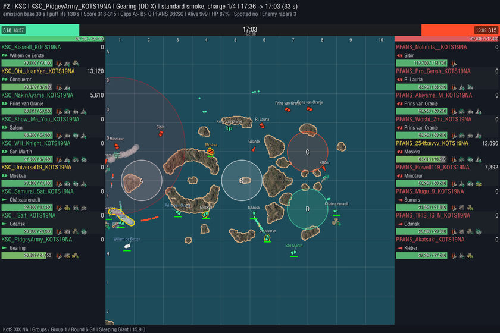
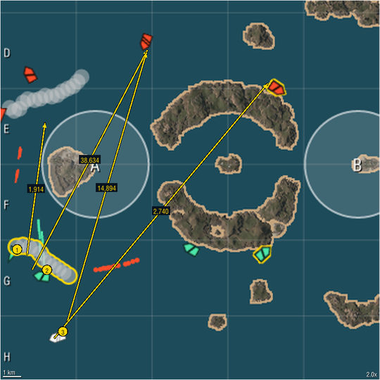

KSC KSC_PidgeyArmy_KOTS19NA Gearing
Sleeping Giant | PFANS vs KSC | Groups Group 1 Round 6 | Game 1 | activated 17:36 (2:24 elapsed, opening), captured 17:03 | standard smoke US_Lvl_10_Gold
58,182 smoke damage 53,197 concealed, 4,985 detected


Clip available on request.
Classification auto-tagged: rule-based from the replay; fuzzy tags carry a confidence; hover a value for the numbers
| Smoker | Destroyer, standard smoke |
| Movement | Horizontal |
| Coverage | Stacked |
| Purpose | |
| Location | zone west; left lane; nearest cap A is a center cap on the flank |
| Front line | behind the midpoint between the fleets |
| Caps in range | A, B |
| Counter to | PFANS_Mugu_9_KOTS19NA Somers laid 19 s after enemy smoke 29781 and 11.0 km from it |
Confidence: high medium low rule-based
Deployment
| Duration | 163 s |
| Allies in smoke at capture | none |
| Selfish smoke | no |
| Hand tags | untagged |
Objectives
| Distance to contested cap | on average 2.4 km from the edge of contested cap A, contested because it sits on the midline between the spawns |
| Cap outcome | no cap changed hands |
| Denial signal | 0.0 enemy ships in or near cap A in the minute before, 0.3 while the smoke stood |
| Score at capture | 318 : 315 (swing +3) |
| Our radar from the smoke | none |
| Radar cap coverage | 83% of cap A within KSC_Show_Me_You_KOTS19NA's radar range; radar was not activated from the smoke |
Violence
| Smoke damage | 58,182 |
| Concealed vs detected | concealed 53,197detected 4,985 |
| Detected shooters were spotted by | smoke fire penalty 4,644, surface lit 341 |
| By where the shooter sat | fired from inside 7,707fired from outside, hidden by it 50,475 |
| By kind | shells 36,683, fires they started 21,499 (guns only 58,182) |
| DD damage | 1,914 |
| Kills from smoke | 0 |
Shooters credited are in the Smokees table below.
Enemy ships damaged from the smoke
| Ship | Player | Concealed | Detected | Total | Sunk |
|---|---|---|---|---|---|
| Sibir | PFANS_Nolimits__KOTS19NA | 50,457 | 3,071 | 53,528 | no |
| Moskva | PFANS_254fxevvv_KOTS19NA | 2,740 | 0 | 2,740 | no |
| Somers DD | PFANS_Mugu_9_KOTS19NA | 0 | 1,914 | 1,914 | no |
The bad news
| Radar spots on us | none |
| Smoke deaths | 1: KSC_Show_Me_You_KOTS19NA (Salem) sunk at 15:01, concealed inside the smoke |
Smokees the smoker, every ally the smoke covered (inside it, firing undetected from behind it, or with it in their line of fire) and every credited shooter; numbers match the zoomed view
| Ship | Player | Role | Undetected | Detected by (time) | Damage dealt concealed / detected | Damage taken while covered | Kills | |
|---|---|---|---|---|---|---|---|---|
| 1 | Gearing | KSC_PidgeyArmy_KOTS19NA | smoker | 80% | radar 16 s | 0 / 0 | 3,168 | 0 |
| 2 | Salem | KSC_Show_Me_You_KOTS19NA | inside | 84% | smoke fire penalty 22 s, surface lit 2 s | 38,293 / 2,255 | 51,260 | 0 |
| 3 | Willem de Eerste | KSC_Kissrell_KOTS19NA | behind | 65% | smoke fire penalty 49 s, surface lit 4 s | 14,904 / 2,730 | 14,784 | 0 |